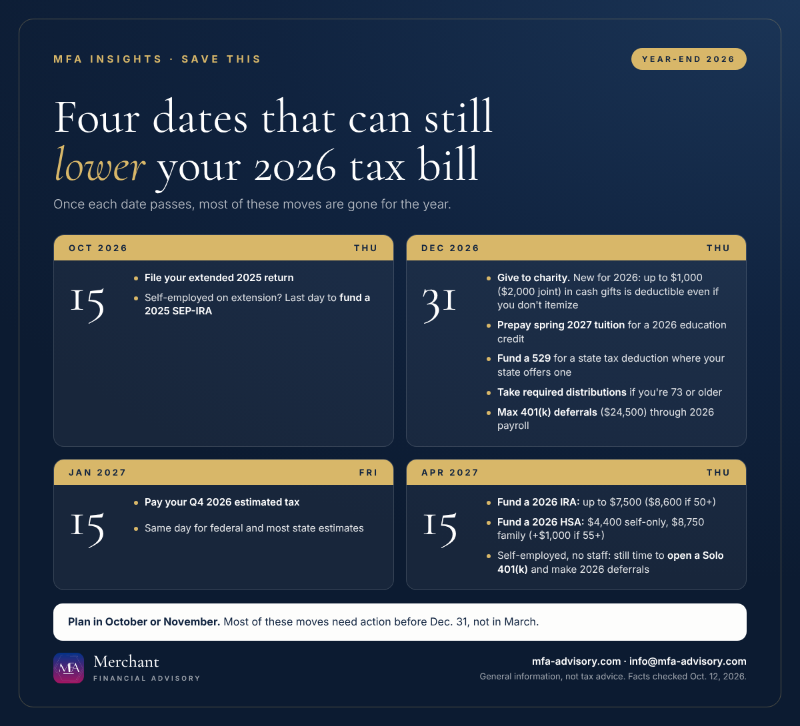

Executive summary
- Oct. 15, 2026: file your extended 2025 return. If you're self-employed and on extension, it's also your last day to fund a 2025 SEP-IRA.
- Dec. 31, 2026: the cutoff for most 2026 moves: charitable gifts, prepaying spring tuition, 529 contributions, required distributions and 401(k) deferrals through payroll.
- Jan. 15, 2027: your fourth-quarter 2026 estimated tax payment.
- April 15, 2027: the last day for 2026 IRA contributions (up to $7,500) and HSA contributions (up to $4,400 self-only, $8,750 family). Sole proprietors can also still open a new Solo 401(k) for 2026.
Bottom line: Most 2026 tax savings disappear after Dec. 31, so review your numbers now rather than in March.
Year-end tax planning 2026 comes down to four dates. Most of the moves that cut your 2026 tax bill have a hard deadline, and once it passes there's nothing your preparer can do about it in March. Here's what to do by each date, with the 2026 limits the IRS has published.

Oct. 15, 2026: extended returns and the last 2025 SEP-IRA
If you filed an extension for your 2025 return, Thursday, Oct. 15, 2026 is the final deadline. New Jersey and New York extended returns are due the same day.
Self-employed and on extension? A SEP-IRA for 2025 can be set up and funded as late as the due date of your return, including extensions. That makes Oct. 15 your last chance to lower your 2025 tax with a retirement contribution.
Dec. 31, 2026: the cutoff for most tax-saving moves
This is the date that matters most. Each of these has to happen in 2026 to count on your 2026 return.
Charitable gifts, with a new rule for 2026
Starting with 2026, you can deduct up to $1,000 of cash gifts to qualifying charities ($2,000 if married filing jointly) even if you take the standard deduction. Before, only people who itemized got a deduction for giving. Keep the receipt, and give in cash (check, card or transfer) rather than goods.
Prepay spring 2027 tuition
Tuition you pay in 2026 for an academic period that starts in the first three months of 2027 counts toward a 2026 education credit, such as the American opportunity credit. If the 2026 credit isn't maxed out, paying the spring bill in December can help.
529 contributions for a state deduction
There's no federal deduction for 529 contributions, but many states give one. New Jersey lets you deduct up to $10,000 of contributions to an NJBEST account if your gross income is $200,000 or less. New York lets you deduct up to $5,000 ($10,000 married filing jointly) for contributions to New York's 529 College Savings Program. Both count contributions made by Dec. 31.
Required minimum distributions
If you're 73 or older, take your 2026 required minimum distribution from IRAs and retirement plans by Dec. 31. (Your first one can wait until April 1 of the following year, but then you take two in one year.)
401(k) deferrals through payroll
Employees can defer up to $24,500 into a 401(k) for 2026, plus $8,000 if 50 or older ($11,250 if 60 to 63). Deferrals come out of paychecks, so they have to run through 2026 payroll. That includes S-corp owners paying themselves a salary.
Jan. 15, 2027: fourth-quarter estimated tax
The fourth-quarter 2026 estimated payment is due Friday, Jan. 15, 2027. That's the one to watch if you're self-employed, had a big capital gain, or sold a business asset late in the year. Most states, including New Jersey and New York, use the same date for their fourth-quarter estimates.
April 15, 2027: IRA, HSA and the Solo 401(k) most people don't know about
| 2026 contribution | Limit | Deadline |
|---|---|---|
| Traditional or Roth IRA | $7,500 ($8,600 if 50+) | April 15, 2027 |
| HSA, self-only coverage | $4,400 (+$1,000 if 55+) | April 15, 2027 |
| HSA, family coverage | $8,750 (+$1,000 if 55+) | April 15, 2027 |
| 401(k) employee deferral | $24,500 (+$8,000 if 50+) | Through 2026 payroll |
The Solo 401(k) rule: since the SECURE 2.0 Act, a sole proprietor with no employees (other than a spouse) can open a brand-new Solo 401(k) after year-end and still make first-year employee deferrals for 2026, up to the due date of the return without extensions. For most people that's April 15, 2027. It's one of the few big retirement moves you can still make after Dec. 31.
How to use these year-end tax planning dates
- Look at your 2026 income now, not in March. Most of the savings above need action by Dec. 31.
- Check your withholding and estimates before Jan. 15 so there's no underpayment penalty surprise.
- Pick the right retirement account for your situation: SEP-IRA, Solo 401(k), traditional IRA or Roth IRA.
- Save the dates. Add them to your calendar with the links below, or subscribe to the MFA key-dates calendar so new deadlines show up on their own.
Running a business too? Our Section 179 vs. bonus depreciation guide covers the Dec. 31 equipment deadline, and our Form 1099 guide covers what's due in January.
FAQs
$7,500, or $8,600 if you're 50 or older. You have until April 15, 2027 to contribute for 2026.
$4,400 for self-only coverage and $8,750 for family coverage, plus $1,000 if you're 55 or older. The deadline for 2026 contributions is April 15, 2027.
A sole proprietor with no employees can open a new Solo 401(k) and make first-year 2026 deferrals until the return due date without extensions, usually April 15, 2027.
The fourth quarter estimated tax payment for 2026 is due January 15, 2027.
Yes. Starting in 2026, non-itemizers can deduct up to $1,000 of cash gifts to qualifying charities, or $2,000 if married filing jointly.
Yes. New Jersey allows up to $10,000 for NJBEST contributions if gross income is $200,000 or less. New York allows up to $5,000 ($10,000 joint) for its 529 College Savings Program.
Merchant Financial Advisory (MFA), an accounting and tax solutions provider in Princeton, New Jersey, helps individuals and small and mid-sized businesses in New Jersey, New York and nationwide plan before year-end. See our tax planning services, or book a call below.
Save the key dates
- Thu, Oct 15, 2026Extended 2025 returns due; last day to fund a 2025 SEP-IRA (if on extension) Final deadline for 2025 individual returns on extension. Self-employed filers on extension can still make 2025 SEP-IRA contributions until this date.+ Google Calendar
- Thu, Dec 31, 2026Year-end deadline for most 2026 tax moves Charitable gifts, prepaying spring 2027 tuition, 529 contributions for a state deduction, required minimum distributions (73+), and 401(k) deferrals through payroll.+ Google Calendar
- Fri, Jan 15, 2027Fourth-quarter 2026 estimated tax payment due Federal Q4 estimate for 2026. Most states, including New Jersey and New York, use the same date.+ Google Calendar
- Thu, Apr 15, 2027Last day for 2026 IRA and HSA contributions; new Solo 401(k) first-year deferrals IRA up to $7,500 ($8,600 if 50+). HSA up to $4,400 self-only or $8,750 family (+$1,000 if 55+). Sole proprietors with no employees can open a new Solo 401(k) and make first-year 2026 deferrals until this date.+ Google Calendar
The .ics file works with Apple Calendar, Outlook and Google Calendar. The subscription updates itself whenever we publish a new deadline.
Get key tax dates and new articles by email
Every new MFA Insights article, the IRS, New Jersey and New York deadlines that matter, and a calendar you can save. For individuals and small and mid-sized businesses.
Almost done: check your inbox and click the confirmation link to join MFA Insights. (If you don't see it in a minute, check Promotions or Spam.)
Have a question about this?
Ask us privately. Your question goes straight to our inbox, not onto the page, and we reply by email within one to three business days. Please don't include Social Security or account numbers.
Thanks, your question is in. We'll reply by email within one to three business days.
Sources
- IRS: 401(k) limit increases to $24,500 for 2026, IRA limit increases to $7,500
- IRS Rev. Proc. 2025-19: 2026 HSA contribution limits
- IRS Topic No. 506: Charitable contributions (non-itemizer deduction starting 2026)
- IRS Publication 970: Tax Benefits for Education (prepaid tuition rule)
- IRS: Retirement plans for self-employed people (SEP set-up deadline)
- IRS Publication 560: Retirement Plans for Small Business
- IRS: Retirement plan and IRA required minimum distributions FAQs
- NJ Division of Taxation: NJBEST deduction (College Affordability Act)
- NY Department of Taxation and Finance: 529 College Savings Program deduction
Facts checked against the sources above as of October 12, 2026. This article is general information, not tax, legal, or financial advice, and reading it does not create a client relationship. Tax rules change and every situation is different; confirm the details for your situation with a qualified professional before acting.